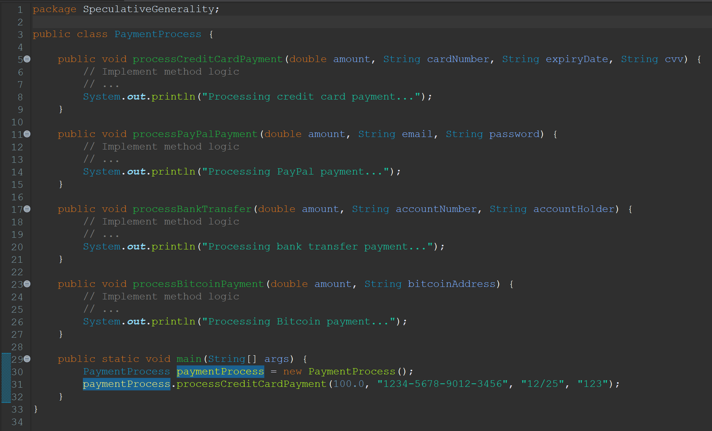
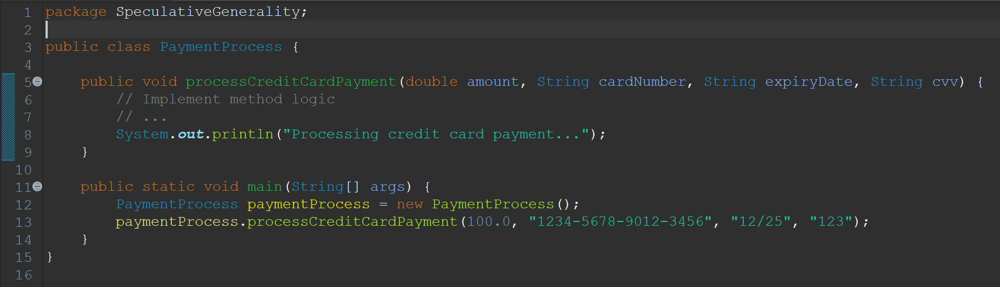

Speculative Generality
Definisi
Speculative Generality adalah sebuah code smell yang terjadi ketika sebuah class, method, atau fitur ditambahkan ke dalam code tanpa ada kebutuhan konkret saat code itu dibuat dengan harapan bahwa suatu saat akan diperlukan, namun pada kenyataannya tidak pernah digunakan.
Contoh
Before
Code:
PaymentProcess.java
Alasan:
Ada beberapa metode pembayaran yang dibuat seperti 'processCreditCardPayment()', 'processPayPalPayment()', 'processBankTransfer()', dan 'processBitcoinPayment()' dengan harapan bahwa nantinya ada beberapa metode pembayaran yang dapat digunakan di dalam sistem. Namun pada kenyataannya, hanya metode pembayaran dengan menggunakan credit card yang digunakan seperti yang ditampilkan di 'main()'.
After
Code:
User.java
Hasil Perbaikan:
Maka dari itu, kita perlu menghapus metode yang tidak terpakai seperti 'processPayPalPayment()', 'processBankTransfer()', dan 'processBitcoinPayment()'.